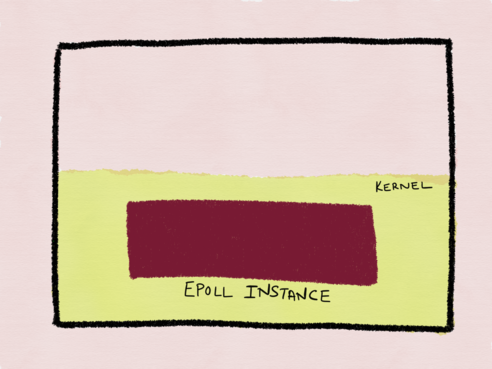
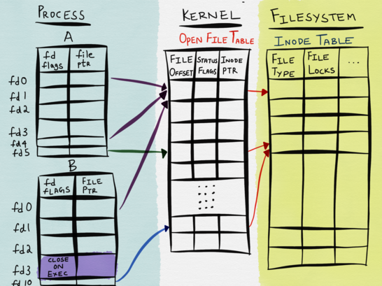
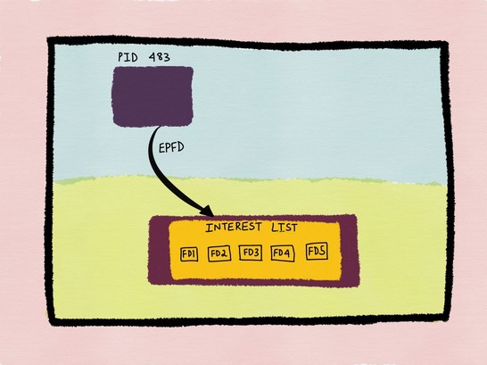
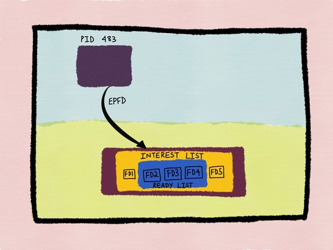

select，poll，epoll都是IO多路复用的机制。I/O多路复用就通过一种机制，可以监视多个描述符，一旦某个描述符就绪（一般是读就绪或者写就绪），能够通知程序进行相应的读写操作。但 select，poll，epoll本质上都是同步I/O，因为他们都需要在读写事件就绪后自己负责进行读写，也就是说这个读写过程是阻塞的，而异步I/O则无需自己负责进行读写，异步I/O的实现会负责把数据从内核拷贝到用户空间。
1. select
1 | int select (int n, fd_set *readfds, fd_set *writefds, fd_set *exceptfds, struct timeval *timeout); |
select 函数监视的文件描述符分3类，分别是writefds、readfds、和exceptfds。
调用后select函数会阻塞，直到有描述符就绪（有数据 可读、可写、或者有except），或者超时函数返回。
select的一个缺点在于单个进程能够监视的文件描述符的数量存在最大限制，在Linux上一般为1024，可以通过修改宏定义甚至重新编译内核的方式提升这一限制，但是这样也会造成效率的降低。
fd_set是一个int型数组，大小为32，每一位都能与一打开的文件句柄建立联系，所以 32 * 32 = 1024
select使用位域的方式来传递关心的文件描述符，位域就有最大长度，在Unix下是256，在Linux下是1024，好像可以调大，但是不方便
1.1. select优点
- select() 可移植性更好，在某些Unix系统上不支持 poll() 。
- select() 对于超时值提供了更好的精度：微秒，而 poll() 是毫秒。
1.2. select缺点
- 单个进程可监视的fd数量被限制。
- 每次都需要重新将监控集合拷贝到内核（select会修改集合）。如果以万计的句柄会导致每次都要 copy 几十几百 KB 的内存到内核态，非常低效。
- 用户需要遍历描述符是否在集合中来判断哪个描述符就绪，这个判断是一个遍历的过程，性能随着描述符增多而下降，并且复杂度更高。
- select每次返回都会修改监控集合，因此每次都需要用户重新向集合中添加所有描述符。
2. poll
1 | int poll (struct pollfd *fds, unsigned int nfds, int timeout); |
与select不同的是，poll不需要使用3个 fd_set ，poll使用一个 pollfd 的指针实现。
1 | struct pollfd { |
每一个 pollfd 结构体指定了一个被监视的文件描述符，可以传递多个结构体，指示 poll() 监视多个文件描述符。 每个结构体的 events 域是监视该文件描述符的事件掩码，由用户来设置这个域。 revents 域是文件描述符的操作结果事件掩码，内核在调用返回时设置这个域。 events 域中请求的任何事件都可能在 revents 域中返回。
1 | POLLIN 有数据可读。 |
2.1. poll优点
- poll 采用事件结构形式对描述符关心的事件进行监控，简化了 select 三种集合操作的流程。
- poll 没有描述符上限的设置。
2.2. poll缺点
- 同样每次都需要将监控集合拷贝到内核。
- 在内核中进行轮询遍历判断就绪，性能随着描述符事件增多而下降。
- 也不会告诉用户具体哪一个描述符就绪，需要用户轮询遍历判断事件中的 revents。
3. epoll
3.1. epoll_create
epoll使用一个文件描述符管理多个描述符，将用户关系的文件描述符的事件存放到内核的一个事件表中，这样在用户空间和内核空间的copy只需一次。
1 | int epoll_create(int size)； |
创建一个epoll 的句柄，size 用来告诉内核这个监听的数目一共有多大，这个参数不同于 select() 中的第一个参数，给出最大监听的 fd+1 的值，参数 size 并不是限制了 epoll 所能监听的描述符最大个数，只是对内核初始分配内部数据结构的一个建议。
当创建好 epoll 句柄后，它就会占用一个 fd 值。所以在使用完 epoll 后，必须调用 close() 关闭，否则可能导致 fd 被耗尽。

Linux 中每一个进程都有一个文件描述符的表，保存当前进程关联的文件描述符。这个表存在用户空间的。 Linux 系统空间中保存一张 “已打开的文件表”，里面保存着当前系统所有已经打开的文件。 文件系统中，每一个文件都是一个 iNode。

如上图所示，进程文件表中每一个 fd 关联到了 kernel 中阿的一个已经打开的文件（可能有多个 fd 指向同一个已经打开的文件）。同样的，kernel 中的已打开文件表指向了文件系统中的 iNode。
3.2. epoll_ctl
1 | int epoll_ctl(int epfd, int op, int fd, struct epoll_event *event)； |
该函数用来对指定的 socket 添加/删除/修改 需要监听的 event。
- epfd：是epoll_create()的返回值。
- op：表示 op 操作，用三个宏来表示：添加EPOLL_CTL_ADD，删除EPOLL_CTL_DEL，修改EPOLL_CTL_MOD
- fd：是需要监听的fd（文件描述符）
- epoll_event：是告诉内核需要监听什么事，struct epoll_event结构如下：
1 | struct epoll_event { |
其中events表示感兴趣的事件和被触发的事件，可能的取值为：
1 | EPOLLIN： 表示对应的文件描述符可以读； |

3.3. epoll_wait
1 | int epoll_wait(int epfd, struct epoll_event * events, int maxevents, int timeout); |
等待 epfd上 的 io 事件，最多返回 maxevents 个事件。当监控的 fd 准备好了之后就会加入到 Ready List 中去。

3.4. 水平触发（LT）
缺省的工作方式，并且同时支持 block 和 non-block socket。在这种做法中，内核告诉你一个文件描述符是否就绪了，然后你可以对这个就绪的 fd 进行IO操作。如果你不作任何操作，内核还是会继续通知你的，所以，这种模式编程出错误可能性要小一点。
3.5. 边沿触发（ET）
高速工作方式，只支持 no-block socket。在这种模式下，当描述符从未就绪变为就绪时，内核通过epoll告诉你。然后它会假设你知道文件描述符已经就绪，并且不会再为那个文件描述符发送更多的就绪通知，等到下次有新的数据进来的时候才会再次出发就绪事件。
采用LT模式下， 如果accept调用有返回就可以马上建立当前这个连接了，再epoll_wait等待下次通知，和select一样。
但是对于ET而言，如果accpet调用有返回，除了建立当前这个连接外，不能马上就epoll_wait还需要继续循环accpet，直到返回-1，且errno==EAGAIN。
为什么边沿触发要配合非阻塞IO
因为如果是边缘触发的情况下，需要一次性把数据读完，就会调用while(read())这样的操作，在最后一次read的时候一定会被阻塞。因为阻塞式IO会在读完之后一直阻塞下去，非阻塞IO则会返回<0，并让errno返回EAGAIN。
Linux IO模式及 select、poll、epoll详解